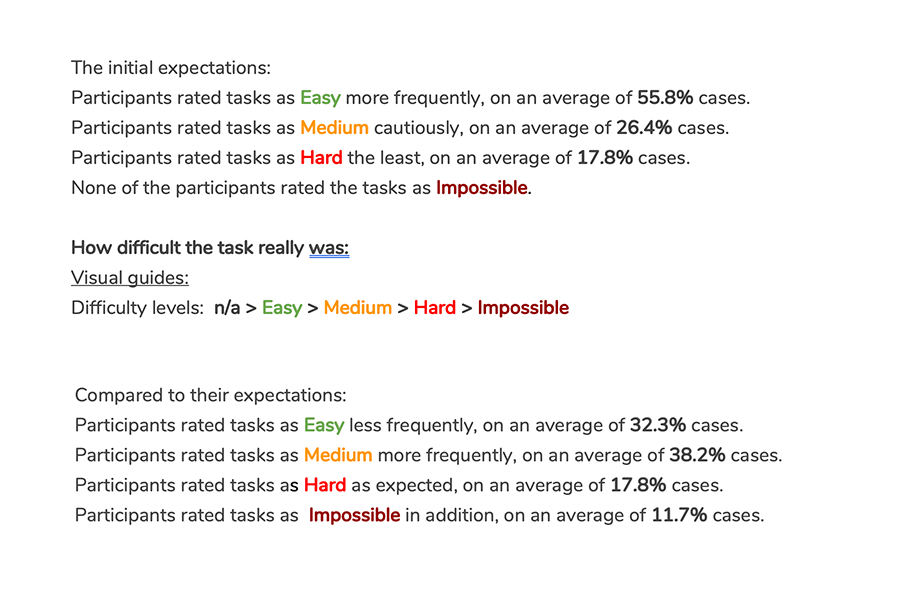

-

User Trailling
A user trial of the Rijksstudio website was set up to assess the usability of the website. It was conducted with 5 participants from different backgrounds and ages but with a passion for art in common. Five research questions were formulated based on our exploration and assumptions on the website. Based on these research questions a list of tasks were made. A test trial was conducted to check the quality of the trial and make adjustments. Each trial was conducted by one test leader and one assistant. During the actual trial, participants were asked to perform tasks while they were being recorded as well as their actions on the screen. Methods: thinking aloud and prioritize tasks was used during the trial. After the tasks, participants were asked a few questions regarding their impressions of the website. Afterwards, all user trials were transcribed. Data answering the research question was presented using an action overview, usability problems table, task accuracy table, a Usability Magnitude Estimation (UME) table, Impressions & improvements table and the User liked best and least features table.
-

Results and Conclusions
Out of our findings we can conclude that the functionalities regarding the instructions page, 'make your own route' and licence policy are unclear and not visible enough. The recommendation is to add a help section on the homepage to help users easily achieve their goals. 60% of our users said they would use the website in the future for inspiration and learning purposes. It is also recommended for the Rijksmuseum to state the purpose of the Rijksstudio on the homepage, users have difficulty finding out what the purpose of the website is. Furthermore, the Rijksmuseum should rethink their iconography regarding the scissors and the heart icon. 2 out of 5 participants had difficulty understanding what they meant. Overall, the majority of the tasks were more difficult than the user expected, they stated the difficulty level afterwards to be medium - high and impossible.
Go Back
Get In Touch
Please don't hesitate to contact me if you need help improving the UX of your product or if you would like to collaborate on future projects.
Contact Me